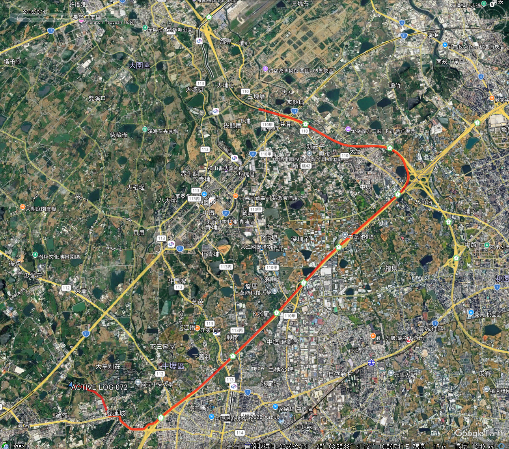
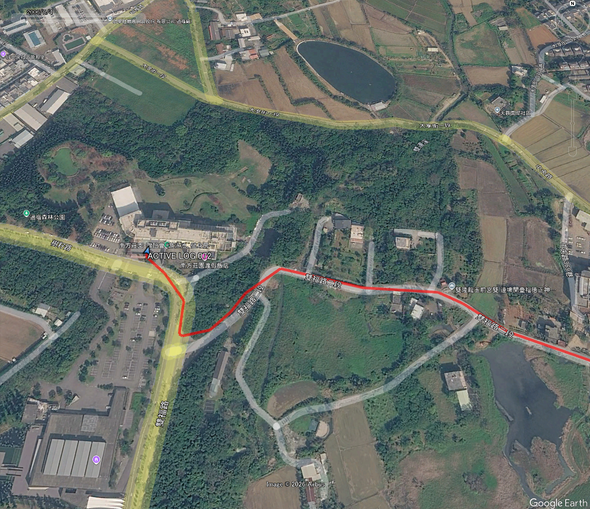

台湾
3/16-19，の間，台湾で，べんもう研究交流会が開催されました．
場所は，南方莊園渡假酒店，というリゾートホテルです．
フライトは関空からチャイナエア，直前まで中国の航空会社と思っていました．．．．台湾の航空会社ですね．
久しぶり，コロナ禍，以来の関空ということで，なれないことばかり．
関空でのチェックイン，出国審査もだいぶ変わりました．
チャイナエアは満席，日本人よりも台湾の方の方が多かったかな？
桃園空港に到着し，タクシーで会場へ．タクシーの助手席からGPSをオンにしましたが，即位まで結構時間がかかりました．
トラックがこちら．

上橋が桃園空港，しばらく経ってからトラッキングが始まっていることがわかります．
無料の高速道路を使い，降りてからは町中を走りました．
タクシー．．．怖かったです．．．．車間距離が狭い．．．横にバイクが走っているのに，近い．．．．
ホテル近くのトラッキングがこちら

まだ，３D化されていないようです．